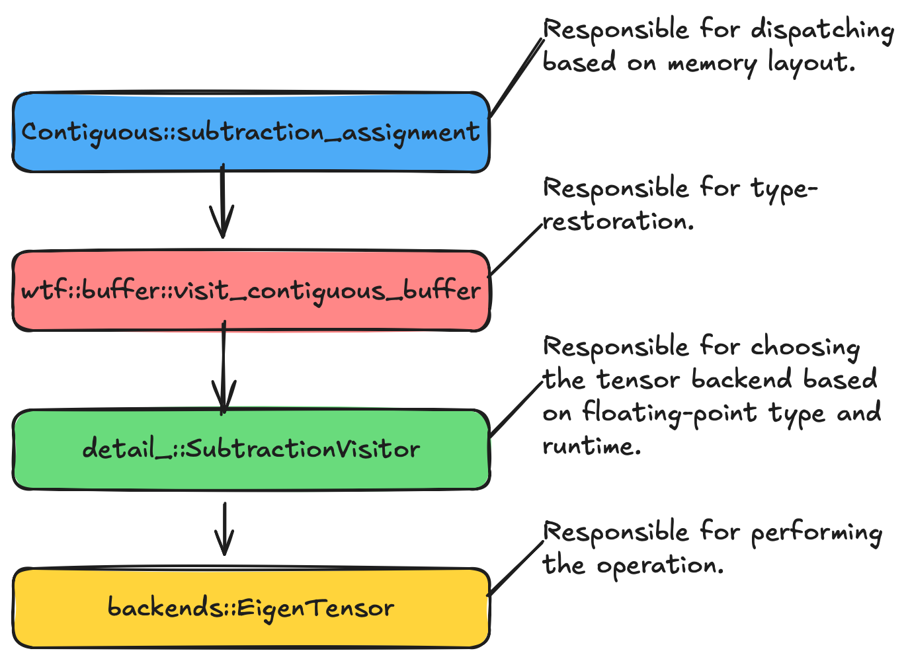

Adding Operations to Contiguous
The Contiguous class is the workhorse of most tensor operations because it
provides the kernels that non-contiguous tensors are built on. As such, we may
need to add operations to it from time to time. This document describes how to
do that.
Understanding How Contiguous Works

Fig. 19 Control flow for an operation resulting in a Contiguous buffer object.
For concreteness, we’ll trace how subtraction_assignment is implemented.
Other binary operations are implemented nearly identically and the
implementation of unary operations is extremely similar.
The input objects,
lhsandrhsare converted toContiguousobjects. N.b., we should eventually use performance models to decide whether the time to convert toContiguousobjects is worth it, or if we should rely on algorithms which do not require contiguous data.We work out the shape of the output tensor.
A visitor for the desired operation is created. For
subtraction_assignment, this isdetail_::SubtractionVisitor.Visitor definitions live in
wtf/src/tensorwrapper/buffer/detail_/.
Control enters
wtf::buffer::visit_contiguous_bufferto restore floating- point types.lhsandrhsare converted tostd::spanobjects.Control enters the visitor.
With types known, the output tensor can be initialized (and is).
The visitor converts the
std::spanobjects into the tensor backend’s tensor objects.Backend implementations live in
wtf/src/tensorwrapper/backends/.
The backend’s implementation of the operation is invoked.
Adding a New Operation
Verify that one of the backends supports the desired operation. If not, add it to a backend first.
Create a visitor for it.
Add the operation to
wtf::buffer::Contiguous.